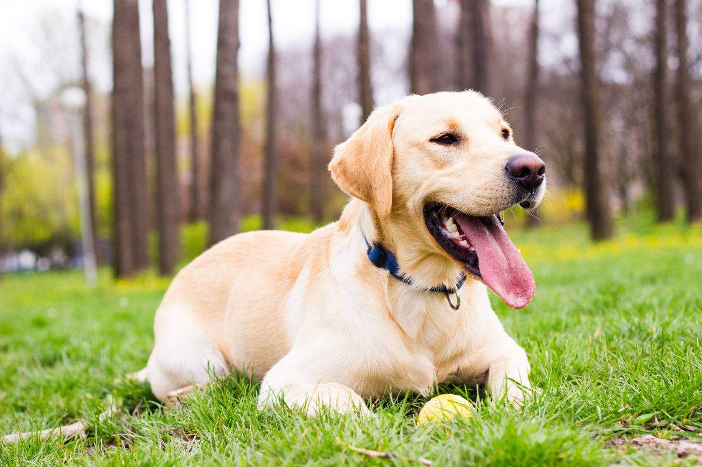
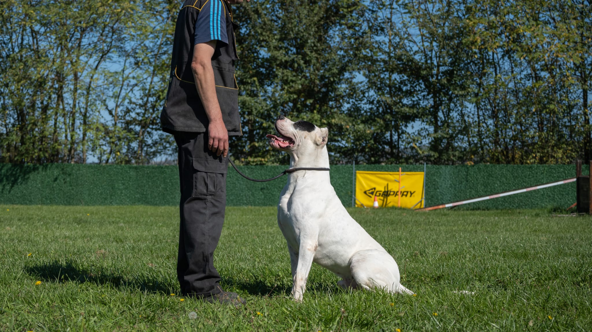

From a British-line working Labrador program. Exceptional nose, endurance, and unshakable friendliness with children, a family dog that can also work in detection and search roles.

From a British-line working Labrador program. Exceptional nose, endurance, and unshakable friendliness with children, a family dog that can also work in detection and search roles.
Atlas is raised in-home at Simpor, evaluated for temperament and drive on a weekly basis, and prepared for the environment in which he will actually live. He is a labrador · k9 bred for detection · family, with the neutrality expected of a Simpor dog around family, guests, and everyday public settings.
Every dog we place leaves with a verifiable FCI export pedigree, a signed veterinary certificate, hip & elbow evaluations, current vaccinations, an ISO microchip registered in the new owner's name, and an in-person handover session that transfers commands and daily routine directly to you.
A selection of moments, training sessions, portraits and real-world work. Full HD reel is available on request.

A short conversation is the fastest way to understand whether Atlas is the right dog for your household, travel patterns, and security needs. We prefer honest guidance over a fast sale.
Inquire About Atlas